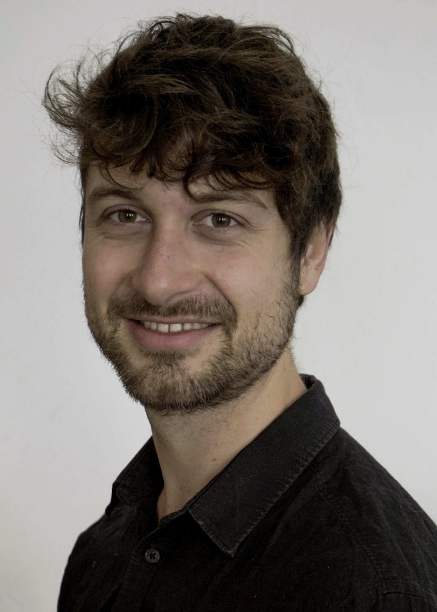

Malte Heithoff, M.Sc. RWTH

Software Engineering
Department of Computer Science 3
RWTH Aachen University
Ahornstraße 55
D-52074 Aachen
+49 (241) 80-21318
heithoff@se-rwth.de
Room 4314
Department of Computer Science 3
RWTH Aachen University
Ahornstraße 55
D-52074 Aachen
+49 (241) 80-21318
heithoff@se-rwth.de
Room 4314
Field of Work:
- Model-driven engineering of (web) information systems
- Model-driven engineering of Digital Twins and Digital Shadows in the context of the RWTH cluster of excellence “Internet of Production (IoP)”
Publications:
-
[HJM+24]In: Digital Twin: Fundamentals and Applications, S. Sabri, K. Alexandridis, N. Lee (Eds.), pp. 89-126, ISBN 978-3-031-67778-6, DOI 10.1007/978-3-031-67778-6_5, Springer Nature Switzerland, Cham, Dec. 2024.
-
[KJM+24]In: Enterprise, Business-Process and Information Systems Modeling, H. van der Aa, D. Bork, R. Schmidt, A. Sturm (Eds.), pp. 275–290, DOI 10.1007/978-3-031-61007-3_21, Springer Nature Switzerland, May 2024.
-
[HJK+23]In: Proceedings of the 16th ACM SIGPLAN International Conference on Software Language Engineering, pp. 194-207, SLE 2023, DOI 10.1145/3623476.3623527, ACM, Cascais, Portugal, Oct. 2023.
-
[HKM+23]In: Model-Driven Engineering for Digital Twins Workshop of the 2023 ACM/IEEE International Conference on Model Driven Engineering Languages and Systems Companion (MoDDiT), D. Di Ruscio, L. Lambers (Eds.), pp. 470-478, DOI 10.1109/MODELS-C59198.2023.00082, IEEE, Västerås, Sweden, Oct. 2023.
-
[HHMR23]In: IEEE/ACM 7th Int. Workshop on Green And Sustainable Software (GREENS), P. Lago, R. Kazman (Eds.), pp. 19–23, DOI 10.1109/GREENS59328.2023.00010, IEEE, Jul. 2023.
-
[MKD+23]In: Internet of Production: Fundamentals, Applications and Proceedings, C. Brecher, G. Schuh, W. van der Aalst, M. Jarke, F. T. Piller, M. Padberg (Eds.), pp. 1–28, DOI 10.1007/978-3-030-98062-7_3-2, Springer, Jun. 2023.
-
[FHM+23]In: Digital Twin Driven Intelligent Systems and Emerging Metaverse, E. Karaarslan, Ö. Aydin, Ü. Cali, M. Challenger (Eds.), pp. 101-121, Springer Nature Singapore, Apr. 2023.
-
[HMR22]In: Modellierung 2022 Satellite Events, pp. 142-146, Gesellschaft für Informatik e.V., Jun. 2022.
-
[DHM+22]In: Journal of Computer Languages (COLA), Volume 70, Art. 101117, Elsevier, Jun. 2022.
-
[BHK+21]In: Int. Conf. on Model Driven Engineering Languages and Systems Companion (MODELS-C), pp. 182-187, ACM/IEEE, Oct. 2021.
-
[HKR21a]In: Companion Proceedings of MODELS 2021. Workshop MoDeVVa, S. Bin Abid, R. Oliveira, I. Ober (Eds.), pp. 264-273, ACM/IEEE, Oct. 2021.
-
[HRW17]In: GI Softwaretechnik-Trends, Volume 37(2), May 2017.